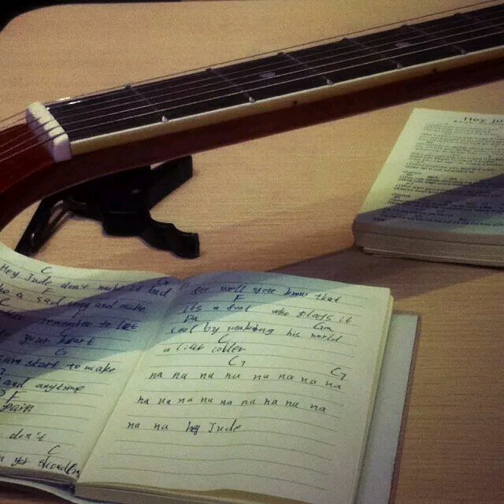

正文:
2016.6.1更！！
各位宝宝节日快乐，这儿最近都成交友平台了，but，说了要组群就不会放大家鸽子！
知乎最近上传的二维码自动链接到微信下载，微信群不能直接扫码了，现改为公布Q群号码，各位须得麻烦点多一个步骤进群再扫码了，来玩要注意规则哦，不能发广告和违法链接，陌生人多，也请注意隐私保护。
群号附在答案最后。
--------------
这个答案大半年了，最近像是又被推上时间线，恶意攻击暂时应该已过去，鉴于求入群的私信络绎不绝，特将群二维码附在答案最后，不用谢！（斜脸笑）
--------萌萌哒小蛮分割线------
【仙剑迷怒刷存在感】
以下原答：
第一次在知乎发现一个自己绝对有资格回答的问题QAQ
------看到评论决定不匿了，本来就活得够孤单了，还匿个球啊！--------
每位看到本答案的建议都看看评论区，有些评论非常值得被看到~~~
看到评论区有对身高问题存疑的，事情是这样的，答主的家乡的确是这种情况，对于其他平均身高比较高的地区的男生，不好意思，我打击面太大了，抱歉！（引发争议的句子已删除，再次向南方地区的男生道歉！）
还有对年龄问题也有异议的，唔，这么说吧，如果你们生活在大城市，是不能体会熟人社会的生存现状的。
基本上年龄大于25还未婚的话，就只能走相亲这一条路了，在小城镇里的年轻人是不多的，25以上又未婚的就更少了。相亲的话，碰到奇葩的概率有多高，相信评论里的妹子们都会告诉你答案。所以在这个年龄会感觉到婚嫁压力的，可能只有生活在小地方的我们会懂吧。。。
最后要说的是，我不以单身为荣，但也不会以单身为耻。只有没有让自己活好，和没有尽到家庭责任这件事会让我觉得羞耻。
我爸爸的话温暖了我，也温暖了你们，如果他老人家知道会很高兴的，哈哈。可是我没有提的，是我妈妈，她会为我嫁不出这个问题大动肝火，还会私底下跟我爸抱怨说我命太贱，连老公都找不到。
曾经当着她的面说我不嫁人了，她真的气到大发脾气。你们听过所有难听的话，我都是从我母亲嘴里听到的。
人生要比惨是比不了的，总有人比我们活得更绝望，短短几十载而已，开不开心时间都永远不会停着不走。
很多时候早上睁开眼睛，就有种不知道为什么要开始这一天的感觉，其实没有什么感觉比得上被需要更美好的。
然而当你不被需要的时候，孤独就挥之不去了。
但是，总还要笑的，既然不被需要，就更不会有人喜欢看我们的哀怨，大家都那么忙。
我没有教坏你们哦，真的没有哦！可是婚姻是长长的几十年与一人相对，请你爱TA，尽心尽力地爱，不要因为年龄到了，条件合适了，就匆匆和陌生人走入婚姻。天灾人祸已经够多，我们就不要再人为制造了。
好了，鸡汤结束。
-------我知道你们想看图，没有图你们是不会嗨森的-----
等着，我这就来几张高清无码的，不谢！
第一张是去年去马来西亚，在双子塔旁边拍的。。。对的，就是马航刚出事儿那会儿。。。
说起这个简直一把辛酸泪，到的时候雷雨交加，没法降落，最后转飞到了槟城。。。在飞机上晃着那会儿简直不要太绝望！
你们笑吧，我很怂我知道的，但那会儿想得最多的不是失恋的痛（正好前一个星期刚被甩），而是真的没为父母尽过孝道。从此我明白究竟什么对自己才是最重要的，我到底该为什么而活。T.T
时间太赶，拍得不好，玩摄影的轻喷~
第二张是我刚开始用手机研究拍摄的时候拍下来的，从此就没回头了。。。
第三张是吉他入门，嗯，就是53231323那个阶段，指尖每天都是钻心地疼。
然后还有一起上课，学尤克里里的孩子们。
还有我抄的简谱。
不要吐槽我的字，我知道丑，但不要吐槽，大龄剩女需要关爱！（真）

蓝后是我小时候的皂片，像个男生一样，但我现在是软妹子，真的，你们信我！
------更新----
刚才打了好多字，手机抽风全没了，我此时的内心是崩溃的。。。。
本来傍晚想要多说点啥的，出去撸这个去了。。。
这里发个软广，有指弹高手求带啊。。。（真挚眼神）
大家的评论我都看了，感谢所有的赞，也感谢喜欢我爸爸的你们。。。。
刚才没了的那几百字就是关于我爸妈的爱情故事的。。。(T_T)
总得来说我爸几乎是那种无死角的完美男人。
这大概是我很难走入婚姻的重要原因吧，我一个白羊座的伪S，最大的愿望是被收服啊！！！
咳咳，扯远了。
看到大家喜欢我的乐观心态，本宝宝乐坏了，但这些都是哭过，无声呐喊过，泪湿过枕头之后，才渐渐调整到了今天的地步。
所以，请善待大龄剩男剩女族群，呜呜呜~
对于有另一半的各位，一定一定一定要好好珍惜。不是每个人都有你的运气。真的。
还有，说组群的，勾搭的，要交朋友的，我等了半天也没等到你们的私信，这是玩我？不知道大龄剩女内心有多脆弱吗你们这群坟蛋！嘤嘤嘤~
好啦，看到你们深夜点赞和评论还是有点担心大家的身体。。。（老年人喜欢聊健康，见谅）
晚安！
-----以下为原答案-----
88年生，单身，自己能养活自己。
热爱保养，养生，虽然身高165，不是萌妹子，但偶尔会被误会还是学生党。
实际上到了这个年纪还未婚单身，大多数都是我们的主观选择。此时的我们，爱情的滋味已经尝过了，父母渐渐年老，身旁的同学好友陆续进入婚姻，或者已育下一代。
我们对生活有了自己的理解，同样，我们有自己的坚持。
本人生活在无线小县城，假设这辈子都不离开，基本上就是个注孤生的结局了。
如果问原因，其实没有什么特别的原因，只是了解自己，也了解别人，未开始就已经可以预见结局。
目前的生活自己唯一不满意的是事业还没到自己期待的地步。
在单身的时间里，学会了自己喜欢的乐器，甚至能玩得颇有成就感。开始接触摄影，有事没事翻贴吧的美图来看。
打算回到舞蹈室重新练习以前喜欢的舞蹈，对以前绝不做的健身也已坚持了好一段时间，看着腹肌渐渐成型的感觉十分美妙。
但以上种种爱好都只能自己玩，同年纪的朋友都已婚，连喝个下午茶都不会有时间。
而比自己年纪小的孩子也懒得搭理怪阿姨。
交的琴友除了师父以外全是网友，互相传点音频，间或吐槽什么的。
除了工作基本没啥社交活动，刚才说了，同龄的没空一起玩，低幼向不带咱玩。
你问父母难道不安排相亲？各位，我隆重介绍我爸爸，他的名言让我倍感温暖，对于我的婚姻大事，他是这么说的：现在的年轻人，拿真心出来恋爱的真不多，都在看条件，男生挑女生，女生挑男生，闺女，如果你真找不到能真心相爱的，就算了，大环境如此，也勉强不了。
偶尔会被已婚好友当着面秀恩爱虐出血，但大多数时候，自己假想一下所托非人的婚姻也不见得比一个人生活容易多少，也就释然了。
小时候不懂事也会歧视大龄单身族群，认为他们必然是奇葩或丑比，不然怎么可能没人要。
长大了报应来得很快。
你说不惧怕孤单吗？怎么会不怕呢？但现实毕竟不是童话，我们能改变的唯一一件事，就只有自己的心态。
也曾经无语问苍天，为何我偏偏没有她们那种运气，难道我如此不值得被爱？
后来渐渐明白，没有就没有咯，你活不下去，那就死啊！
上帝，你为何这么屌？
走过了以上种种，就开始坦然接受了，没有人爱的时候，其实，我们有了更多的时间去爱生活，爱家人，爱自己。
无论何种人生，如果最后活不成自己喜欢的样子，其实都是某种程度上的不幸。
未来如何，没人能预料，我能做的只有努力地过好每一天！
来都来了，不要带遗憾离开，这就是当前的全部追求了。
以上。
群：291222497
还有，不约，谢谢！为免泄露隐私，评论区仍旧关闭，请谅解！